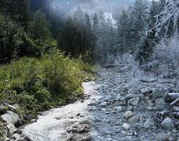
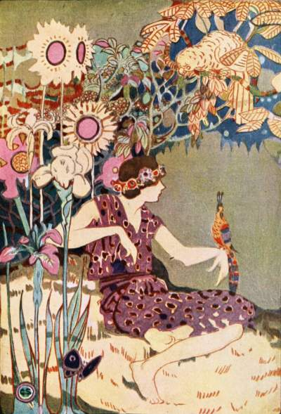
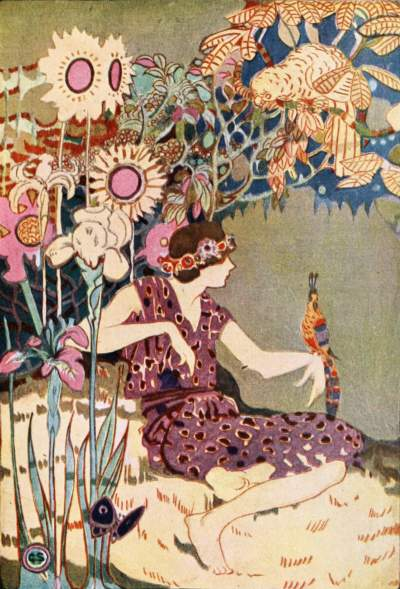

How Summer Came To Canada

Once during Glooskap's lifetime and reign in Canada it grew very cold. Everywhere there was snow and ice, and in all the land there was not a flower nor a leaf left alive. The fires that the Indians built could not bring warmth. The food supply was slowly eaten up, and the people were unable to grow more corn because of the hard frozen ground. Great numbers of men and women and children died daily from cold and hunger, and it seemed as if the whole land must soon perish.
Over this extreme cold Glooskap had no power. He tried all his magic, but it was of no avail. For the cold was caused by a powerful giant who came into the land from the far North, bringing Famine and Death as his helpers. Even with his breath he could blight and wither the trees, so that they brought forth no leaves nor fruit; and he could destroy the corn and kill man and beast. The giant's name was Winter. He was very old and very strong, and he had ruled in the far North long before the coming of man. Glooskap, being brave and wishing to help his people in their need, went alone to the giant's tent to try to coax or bribe or force him to go away. But even he, with all his magic power, at once fell in love with the giant's home; for in the sunlight it sparkled like crystal and was of many wonderful colours, but in the night under the moonlight it was spotlessly white. From the tent, when Glooskap looked out, the face of the earth was beautiful. The trees had a covering of snow that gave them strange fantastic shapes. The sky was filled by night with flashing quivering lights, and even the stars had a new brightness. The forest, too, was full of mysterious noises. Glooskap soon forgot his people amid his new surroundings. The giant told him tales of olden times when all the land was silent and white and beautiful like his sparkling tent. After a time the giant used his charm of slumber and inaction, until Glooskap fell asleep, for the charm was the charm of the Frost. For six months he slept like a bear. Then he awoke, for he was very strong and Winter could not kill him even in his sleep. But when he arose he was hungry and very tired.
One day soon after he awoke, his
tale-bearer, Tatler the Loon, brought him good news.
He told of a wonderful Southland, far away, where it
was always warm, and where lived a Queen who could
easily overcome the giant; indeed, she was the only
one on earth whose power the giant feared. Loon
described carefully the road to the new country.
Glooskap, to save his people from Winter and Famine
and Death, decided to go to the Southland and find
the Queen. So he went to the sea, miles away, and
sang the magic song that the whales obeyed. His old friend Blob the Whale came quickly to his call, and getting on her back he sailed away. Now, the whale always had a strange law for travellers. She said to Glooskap: "You must shut your eyes tight while I carry you; to open them is dangerous, for, if you do, I will surely go aground on a reef or a sand bar and cannot get off, and you may then be drowned." And Glooskap promised to keep his eyes shut. Many days the whale swam, and each day the water grew warmer, and the air grew gentler and sweeter, for it came from spicy shores; and the smells were no longer those of the salt sea, but of fruits and flowers and pines. Soon they saw in the sky by night the Southern Cross. They found, too, that they were no longer in the deep sea, but in shallow water flowing warm over yellow sands, and that land lay not far ahead. Blob the Whale now swam more cautiously. Down in the sand the clams were singing a song of warning, telling travellers in these strange waters of the treacherous sand bar beneath. "Oh, big whale," they sang, "keep out to sea, for the water here is shallow and you shall come to grief if you keep on to shore."
But the whale did not understand the
language of the little clams. And he said to
Glooskap, who understood, "What do they sing?" But
Glooskap, wishing to land at once, answered, "They
tell you to hurry for a storm is coming,—to hurry
along as fast as you can." Then the whale hurried
until she was soon close to the land. Glooskap, wishing the whale to go aground so that he could more easily walk ashore, opened his left eye and peeped, which was contrary to the whale's laws. And at once the whale stuck hard and fast on the beach, so that Glooskap, springing from her head, walked ashore on dry land. The whale, thinking that she could never get off, was very angry, and sang a song of lament and blame. But Glooskap put one end of his strong bow against the whale's jaw, and taking the other end in his hands, he placed his feet against the high bank, and, with a mighty push, he sent old Blob again into the deep water. Then, to keep the whale's friendship, he threw her an old pipe and a bag of Indian tobacco leaves—for Glooskap was a great smoker—and the whale, greatly pleased with the gift, lighted the pipe and smoking it swam far out to sea. Glooskap watched her disappear from view until he could see only clouds of her smoke against the sky. And to this day the whale has Glooskap's old pipe, and sailors often see her rise to the surface to smoke it in peace and to blow rings of tobacco smoke into the air.
When the whale had gone, Glooskap walked
with great strides far inland. Soon he found the way
of which Loon had told him. It was the Rainbow Road
that led to the Wilderness of Flowers. It lay
through the land of the Sunrise, beautiful and fresh
in the morning light. On each side were sweet
magnolias and palms, and all kinds of trees and
flowers. The grass was soft and velvety, for by
night the dew was always on it; and snow and hail were unknown, and winds never blew coldly, for here the charm of the Frost had no power.
Glooskap went quickly along the flower-lined Rainbow Road, until he came to an orange grove where the air was sweet with the scent of blossoms. Soon he heard sounds of music. He peered through the trees, and saw that the sounds came from an open space not far ahead, where the grass was soft and where tiny streams were flowing and making melody. It was lilac-time in the land, and around the open space all kinds of flowers in the world were blooming. On the trees numberless birds were singing—birds of wonderfully coloured feathers such as Glooskap had never heard or seen before. He knew that he had reached at last the Wilderness of Flowers, of which old Tatler the Loon had spoken. He drew deep breaths of honeysuckle and heliotrope and countless other flowers, until he soon grew strong again after his long voyage.
Then he crept close to the edge of the open space and looked in from behind the trees. On the flower-covered grass within, many fair maidens were singing and dancing, holding in their hands chains of blossoms, like children in a Maypole game. In the centre of the group was one fairer than all the others—the most beautiful creature he had ever seen,—her long brown hair crowned with flowers and her arms filled with blossoms. For some time Glooskap gazed in silence, for he was too surprised to move or to utter speech. Then he saw at his side an old woman,—wrinkled and faded, but still beautiful,—like himself watching the dance. He found his voice and asked, "Who are those maidens in the Wilderness of Flowers?" And the old woman answered, "The maiden in the centre of the group is the Fairy Queen; her name is Summer; she is the daughter of the rosy Dawn,—the most beautiful ever born; the maidens dancing with her are her children, the Fairies of Light and Sunshine and Flowers."
Glooskap knew that here at last was the Queen who by her charms could melt old Winter's heart and force him to go away, for she was very beautiful and good. With his magic song he lured her from her children into the dark forest; there he seized her and held her fast by a crafty trick. Then, with her as a companion, he began his long return journey north by land. That he might know the way back to the Wilderness of Flowers, he cut a large moose hide, which he always carried, into a long slender cord, and as he ran north with Summer, he let the cord unwind behind him, for he had no time to mark the trail in the usual way. When they had gone, Summer's children mourned greatly for their Queen. For weeks the tears ran down their cheeks like rain on all the land, and for a long time, old Dawn, the Queen's mother, covered herself with dark mourning clouds and refused to be bright.
After many days, still holding Summer in his
bosom—for she loved him because of his magic
power—Glooskap reached the Northland. He found none
of his people, for they were all asleep under the
giant's power, and the whole country was cold and
lonely. At last he came to the home of old Winter.
The giant welcomed him and the beautiful girl, for
he hoped to freeze them both and keep them with him
always. For some time they talked together in the
tent, but, although he tried hard, the giant was
unable to put them to sleep. Soon old Winter felt
that his power had vanished and that the charm of
the Frost was broken. Large drops of sweat ran down
his face; then his tent slowly disappeared, and he
was left homeless. Summer used her strange power
until everything that Winter had put to sleep awoke
again. Buds came again upon the trees; the snow ran
down the rivers, carrying away the dead leaves; and
the grass and the corn sprang up with new life. And
old Winter, being sorrowful, wept, for he knew that
his reign was ended, and his tears were like cold
rain. Summer, the Queen, seeing him mourn and
wishing to stop his tears, said: "I have proved that
I am more powerful than you; I give you now all the
country to the far north for your own, and there I
shall never disturb you; you may come back to
Glooskap's country six months of every year and
reign as of old, but you will be less severe; during
the other six months, I myself will come from the
south and rule the land." Old Winter could do
nothing but accept this offer gracefully, for he feared that if he did not he would melt entirely away. So he built a new home farther north, and there he reigns without interruption. In the late autumn he comes back to Glooskap's country and reigns for six months, but his rule is softer than in olden times. And when he comes, Summer, following Glooskap's moose-hide cord, runs home with her birds to the Wilderness of Flowers. But at the end of six months she always comes back to drive old Winter away to his own land, to awaken the northern world, and to bring it the joys that only she, the Queen, can give. And so, in Glooskap's old country Winter and Summer, the hoary old giant and the beautiful Fairy Queen, divide the rule of the land between them.
 

How Summer Came To Canada
Transcribed by Cyrus MacMillan, 1917. The writer's deepest thanks are expressed to the nameless Indians and "habitants," the fisherman and sailors, "the spinners and the knitters in the sun," from whose lips he heard these stories.
Back to Top